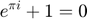

clear; clc; %Indlæs filen i variablen y ved brug af audioread: load ECG % ***** Roter matrixen 90 grader ******************************** B = rot90(ecg); % ***** Udvælg 1 signal ***************************************** x = B(1,:); % ***** Antal samples og varighed i sekunder ******************** Fsample=500; N = length(x); Tlength = N/Fsample; % ***** Beregn DFT på signalet ********************************** X=fft(x,N); % ***** Frekvensakse setup ************************************** delta_f = Fsample/N; f_axis = [0:delta_f:Fsample-delta_f]; % ***** Definer hann funktionen (vinduet)*********************** w = hanning(N); % ***** Gang hann funktionen på funktionen y ******************* x_hann=x.*w'; W = fft(x_hann,N); % ***** Udklat et signal *************************************** [f_oct3, Xm] = oct_smooth(X, Fsample, 12, [1 100]); ECG_oct12dB = 20*log10(abs((2/N)*Xm)); % ***** Plot *************************************************** figure(1); clf semilogx(f_axis(1:0.5*end),20*log10(abs((2/N)*X(1:0.5*(end))))) xlabel('Frekvens i Herz') ylabel('Størrelse i dB ift. 1 Volt') title('ECG DFT-signal') grid on figure(2); clf semilogx(f_axis(1:0.5*end),20*log10(abs((2/N)*W(1:0.5*(end))))) xlabel('Frekvens i Herz') ylabel('Størrelse i dB ift. 1 Volt') title('ECG med Hanning vindue') grid on figure(3); clf semilogx(f_oct3, ECG_oct12dB) xlabel('Frekvens i Herz') ylabel('Størrelse i dB ift. 1 Volt') title('Udglattet ECG signal') grid on figure(4); clf plot(x) xlabel('Samples') ylabel('Amplitude (volt)') title('Originalsignal ECG') grid on